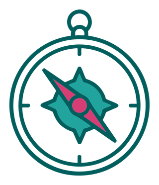

Une cartographie collaborative des acteur·rices, programmes et initiatives qui façonnent l'environnement alimentaire des enfants en Suisse — à l'échelle locale, cantonale et nationale.
Mettre en lumière les acteur·rices nationaux, cantonaux et locaux de l'éducation à l'alimentation.
Identifier les complémentarités et les opportunités de collaboration entre initiatives existantes.
Permettre à chacun de se situer dans le paysage avant de lancer de nouveaux projets.
Adresser le bon message aux acteur·rices qui sont réellement concerné·es.

La carte interactive du système ChiFoo sera intégrée ici. Elle permettra d'ajouter ton projet, d'explorer les acteurs par thème et de tisser des liens.
Proposer un ajout à la carte →Ajoute ton projet ou initiative sur la carte du système ChiFoo pour le rendre visible auprès des autres acteur·rices et créer des synergies. Contacte-nous pour en parler.
De la petite enfance à l'adolescence, l'éducation à l'alimentation se joue à de multiples niveaux : famille, école, cantine, club de sport, associations, cantons, État fédéral.
Explorer les 8 champs d'action →